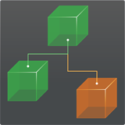

Integration with Other Packages
Packages:
- Unity UI
- UFPS
- PlayMaker
- Behavior Designer
- Third Person Controller
- Motion Controller
- iRDS - Intelligent Race Driver System
- Racing Game Starter Kit
- GAC (Great Animation Combos) System
- Inventory Pro
- uFS - Flight Simulation Engine
- Others
Unity UI
Rewired can be used as the input source for Unity's UI system introduced in Unity 4.6. In order to use Rewired to control Unity's UI, you must replace the StandaloneInputModule component on the UI EventSystem object with the RewiredStandaloneInputModule. Please see Rewired Standalone Input Module for more information.
UFPS
Rewired can be used to provide input for UFPS, a popular first person shooter kit by Vision Punk. Rewired comes pre-packaged with an integration kit that was designed to work with UFPS 1.4.9.
To install the UFPS Integration Pack, do the following:
- Ensure that you are running Unity 4.5 or greater.
- Install Rewired and UFPS first. If UFPS is not installed, you will get errors when the integration pack is installed.
- Run the following menu item in the Unity editor:
Window -> Rewired -> Integration -> UFPS -> Install Integration Pack - Follow the on-screen prompts.
- When installation is complete, you will need to create a Rewired UFPS Input Manager in your scene before Rewired will be able to handle input. You can do this from the menu:
Window -> Rewired -> Integration -> UFPS -> Create UFPS Rewired Input Manager - The Rewired UFPS Input Manager contains default settings for all of UFPS's controls for the keyboard, mouse, and dual analog gamepads. If you want to customize the controls, simply click the "Rewired UFPS Input Manager" then edit the settings in the Rewired Editor.
To Uninstall:
- Delete the Rewired/Integration/UFPS folder
- Delete the Rewired UFPS Input Manager from the scene
Notes:
- UFPS's built-in input manager will no longer have any effect as long as the Rewired UFPS Input Manager exists in the scene. Additionally, some UFPS functions such as those designed to let you remap keys will no longer have any effect. You should manage key remapping using Rewired instead.
- The Rewired UFPS integration pack makes no changes to the UFPS source code. You are therefore free to update UFPS as you see fit without losing the integration with Rewired.
- If you install UFPS after installing Rewired, UFPS will overwrite the /ProjectSettings/InputManager.asset in your project. This will overwrite Unity input manager entries that Rewired needs to be able to get mouse input or to get joystick input on platforms that fall back on Unity input as the input source. If this happens, simply reinstall Rewired's Input Manager settings by running the installer from the menu Window -> Rewired -> Setup -> Run Installer and allow it to overwrite the InputManager.asset file.
PlayMaker
 Rewired can be used with Hutong Games PlayMaker, a popular visual scripting tool for Unity.
Rewired can be used with Hutong Games PlayMaker, a popular visual scripting tool for Unity.
To install the PlayMaker Integration Pack, do the following:
- Install Rewired and PlayMaker first. If PlayMaker is not installed, you will get errors when the integration pack is installed.
- Run the following menu item in the Unity editor:
Window -> Rewired -> Integration -> PlayMaker -> Install Integration Pack - Follow the on-screen prompts.
To Uninstall:
- Delete the Rewired/Integration/PlayMaker folder
Behavior Designer
Rewired can be used with Opsive Behavior Designer, a popular visual scripting and behavior tree tool for Unity.
To install the Behavior Designer Integration Pack, do the following:
- Install Rewired and Behavior Designer first. If Behavior Designer is not installed, you will get errors when the integration pack is installed.
- Run the following menu item in the Unity editor:
Window -> Rewired -> Integration -> Behavior Designer -> Install Integration Pack - Follow the on-screen prompts.
To Uninstall:
- Delete the Rewired/Integration/BehaviorDesigner folder
Third Person Controller
Rewired can be used with Opsive Third Person Controller, a popular third-person game kit. The integration pack can be downloaded from Opsive's site here.
Note: This integration is a 3rd party integration package and not maintained or supported by Guavaman Enterprises.
Motion Controller
Motion Controller by ootii is an animation framework and character controller for any character and any game. You can download the intregration from ootii's Vault. (Search the page for Rewired.)
Note: This integration is a 3rd party integration package and not maintained or supported by Guavaman Enterprises.
iRDS - Intelligent Race Driver System
iRDS - Intelligent Race Driver System by Jose Garrido is a racing game toolkit that helps you to develop Racing Games. Please see the iRDS documentation for details.
Note: This integration is a 3rd party integration package and not maintained or supported by Guavaman Enterprises.
Racing Game Starter Kit
Racing Game Starter Kit by Intense Games is an easy to use asset for creating racing games. The integration is included in the package. Please see the Racing Game Starter Kit documentation for details.
Note: This integration is a 3rd party integration package and not maintained or supported by Guavaman Enterprises.
GAC (Great Animation Combos) System
GAC (Great Animation Combos) System by Eric Turgott is an asset that allows you to implement combos for any action game. The integration is included in the package. Please see the GAC documentation for details.
Note: This integration is a 3rd party integration package and not maintained or supported by Guavaman Enterprises.
Inventory Pro
Inventory Pro by Devdog is a highly flexible inventory system for Unity. Inventory Pro can be used for RPG, RTS, FPS, and other game types. The integration is included in the package. Please see the Inventory Pro documentation for details.
Note: This integration is a 3rd party integration package and not maintained or supported by Guavaman Enterprises.
uFS - Flight Simulation Engine
uFS - Flight Simulation Engine by REMEX Software Ltd delivers previously unseen Flight Simulation accuracy to the Unity Asset Store.
Rewired includes an integration pack for uFS which can be installed from the menu:
Rewired -> Integration -> uFS -> Install Integration Pack
In addition to the integration pack, Unity Input Override must be installed.
Usage
Create a Rewired UnityFS Input Manager from the menu:
Rewired -> Integration -> uFS -> Create uFS Rewired Input Manager
This will set up default controls that will work with uFS.
To Uninstall
- Delete the Rewired/Integration/UFS folder.
- Optionally uninstall Unity Input Override.
Others
Most Unity Asset Store assets can be used with Rewired by using the Unity Input Override system. Please see Unity Input Override for details.